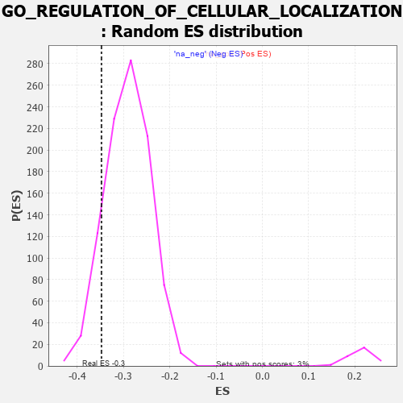

| | | Dataset | 7d |
| Phenotype | NoPhenotypeAvailable |
| Upregulated in class | na_neg |
| GeneSet | GO_REGULATION_OF_CELLULAR_LOCALIZATION |
| Enrichment Score (ES) | -0.34761825 |
| Normalized Enrichment Score (NES) | -1.1927713 |
| Nominal p-value | 0.11157025 |
| FDR q-value | 0.6408705 |
| FWER p-Value | 1.0 |
Table: GSEA Results Summary
 Fig 1: Enrichment plot: GO_REGULATION_OF_CELLULAR_LOCALIZATION
Fig 1: Enrichment plot: GO_REGULATION_OF_CELLULAR_LOCALIZATION
Profile of the Running ES Score & Positions of GeneSet Members on the Rank Ordered List
| PROBE | GENE SYMBOL | GENE_TITLE | RANK IN GENE LIST | RANK METRIC SCORE | RUNNING ES | CORE ENRICHMENT | | 1 | DCLK1 | | | 55 | 2.532 | 0.0114 | No |
| 2 | RAC2 | | | 60 | 2.442 | 0.0288 | No |
| 3 | ADCY8 | | | 124 | 1.418 | 0.0310 | No |
| 4 | CSRP3 | | | 161 | 1.186 | 0.0350 | No |
| 5 | FOXF1 | | | 176 | 1.136 | 0.0415 | No |
| 6 | RHOU | | | 210 | 1.031 | 0.0448 | No |
| 7 | CNST | | | 317 | 0.792 | 0.0369 | No |
| 8 | GSK3A | | | 351 | 0.745 | 0.0380 | No |
| 9 | LARP7 | | | 369 | 0.731 | 0.0412 | No |
| 10 | PLD1 | | | 381 | 0.716 | 0.0450 | No |
| 11 | MESD | | | 384 | 0.713 | 0.0500 | No |
| 12 | BAX | | | 387 | 0.711 | 0.0549 | No |
| 13 | SUFU | | | 443 | 0.665 | 0.0526 | No |
| 14 | LRP1 | | | 470 | 0.648 | 0.0540 | No |
| 15 | NUP54 | | | 505 | 0.627 | 0.0542 | No |
| 16 | NMD3 | | | 513 | 0.625 | 0.0579 | No |
| 17 | HTRA2 | | | 527 | 0.621 | 0.0607 | No |
| 18 | NDC80 | | | 616 | 0.590 | 0.0537 | No |
| 19 | RBM4 | | | 649 | 0.576 | 0.0537 | No |
| 20 | SUMO3 | | | 753 | 0.544 | 0.0444 | No |
| 21 | CPSF6 | | | 778 | 0.538 | 0.0452 | No |
| 22 | HDAC8 | | | 881 | 0.510 | 0.0357 | No |
| 23 | NSUN2 | | | 901 | 0.506 | 0.0370 | No |
| 24 | ZPR1 | | | 967 | 0.491 | 0.0321 | No |
| 25 | DVL3 | | | 971 | 0.490 | 0.0353 | No |
| 26 | AKT1 | | | 1040 | 0.476 | 0.0300 | No |
| 27 | MEF2C | | | 1054 | 0.473 | 0.0318 | No |
| 28 | RINT1 | | | 1110 | 0.462 | 0.0280 | No |
| 29 | SRC | | | 1128 | 0.459 | 0.0292 | No |
| 30 | UBL5 | | | 1162 | 0.452 | 0.0282 | No |
| 31 | TFDP1 | | | 1180 | 0.450 | 0.0293 | No |
| 32 | CRIPT | | | 1185 | 0.449 | 0.0321 | No |
| 33 | KAT7 | | | 1240 | 0.440 | 0.0283 | No |
| 34 | PARL | | | 1290 | 0.432 | 0.0251 | No |
| 35 | DKC1 | | | 1292 | 0.431 | 0.0281 | No |
| 36 | NRDE2 | | | 1320 | 0.425 | 0.0278 | No |
| 37 | YIPF5 | | | 1406 | 0.409 | 0.0197 | No |
| 38 | P2RY1 | | | 1416 | 0.407 | 0.0215 | No |
| 39 | XPO4 | | | 1518 | 0.388 | 0.0113 | No |
| 40 | DERL2 | | | 1632 | 0.368 | -0.0007 | No |
| 41 | BACE1 | | | 1673 | 0.360 | -0.0032 | No |
| 42 | XPO5 | | | 1700 | 0.357 | -0.0040 | No |
| 43 | JPH1 | | | 1741 | 0.347 | -0.0066 | No |
| 44 | WAPL | | | 1758 | 0.344 | -0.0062 | No |
| 45 | LRP5 | | | 1769 | 0.342 | -0.0049 | No |
| 46 | NUP58 | | | 1787 | 0.340 | -0.0047 | No |
| 47 | THOC2 | | | 1796 | 0.338 | -0.0032 | No |
| 48 | ABR | | | 1812 | 0.335 | -0.0027 | No |
| 49 | FMR1 | | | 1816 | 0.334 | -0.0007 | No |
| 50 | NUP62 | | | 1871 | 0.324 | -0.0053 | No |
| 51 | BRSK2 | | | 1979 | 0.308 | -0.0169 | No |
| 52 | MCRS1 | | | 1996 | 0.305 | -0.0167 | No |
| 53 | DMAP1 | | | 2025 | 0.301 | -0.0182 | No |
| 54 | RBM27 | | | 2111 | 0.289 | -0.0271 | No |
| 55 | SYK | | | 2186 | 0.278 | -0.0346 | No |
| 56 | C2CD5 | | | 2204 | 0.276 | -0.0348 | No |
| 57 | BCAS3 | | | 2352 | 0.253 | -0.0520 | No |
| 58 | SIN3A | | | 2361 | 0.251 | -0.0512 | No |
| 59 | NCBP2 | | | 2383 | 0.248 | -0.0521 | No |
| 60 | SAE1 | | | 2390 | 0.247 | -0.0511 | No |
| 61 | BTBD9 | | | 2407 | 0.245 | -0.0514 | No |
| 62 | KDM1A | | | 2447 | 0.237 | -0.0547 | No |
| 63 | UBAC2 | | | 2488 | 0.229 | -0.0582 | No |
| 64 | CDT1 | | | 2505 | 0.226 | -0.0586 | No |
| 65 | HUWE1 | | | 2506 | 0.225 | -0.0570 | No |
| 66 | NUMB | | | 2519 | 0.224 | -0.0569 | No |
| 67 | BAG3 | | | 2620 | 0.209 | -0.0683 | No |
| 68 | VPS4A | | | 2654 | 0.205 | -0.0711 | No |
| 69 | LMAN1 | | | 2743 | 0.192 | -0.0811 | No |
| 70 | RIOK2 | | | 2775 | 0.187 | -0.0837 | No |
| 71 | SCFD1 | | | 2783 | 0.185 | -0.0833 | No |
| 72 | FER | | | 2803 | 0.183 | -0.0844 | No |
| 73 | ARV1 | | | 2827 | 0.179 | -0.0861 | No |
| 74 | BECN1 | | | 2828 | 0.179 | -0.0848 | No |
| 75 | PDCD5 | | | 2885 | 0.169 | -0.0908 | No |
| 76 | ERO1A | | | 2925 | 0.162 | -0.0947 | No |
| 77 | GOSR1 | | | 2940 | 0.159 | -0.0953 | No |
| 78 | XPO1 | | | 2960 | 0.156 | -0.0966 | No |
| 79 | ANO1 | | | 2982 | 0.152 | -0.0982 | No |
| 80 | ISCU | | | 2989 | 0.151 | -0.0979 | No |
| 81 | FEZ1 | | | 3055 | 0.142 | -0.1053 | No |
| 82 | MAP2 | | | 3074 | 0.140 | -0.1066 | No |
| 83 | STX6 | | | 3087 | 0.138 | -0.1071 | No |
| 84 | CHP1 | | | 3089 | 0.138 | -0.1063 | No |
| 85 | MTMR2 | | | 3126 | 0.133 | -0.1099 | No |
| 86 | EDEM2 | | | 3145 | 0.131 | -0.1113 | No |
| 87 | RBM22 | | | 3182 | 0.125 | -0.1151 | No |
| 88 | AP1G1 | | | 3210 | 0.121 | -0.1177 | No |
| 89 | SMAD3 | | | 3303 | 0.105 | -0.1288 | No |
| 90 | CDK5 | | | 3480 | 0.080 | -0.1511 | No |
| 91 | FES | | | 3501 | 0.077 | -0.1531 | No |
| 92 | UFM1 | | | 3506 | 0.077 | -0.1531 | No |
| 93 | UBR5 | | | 3518 | 0.074 | -0.1539 | No |
| 94 | HDAC3 | | | 3528 | 0.072 | -0.1546 | No |
| 95 | PIN1 | | | 3543 | 0.069 | -0.1559 | No |
| 96 | PARD3 | | | 3584 | 0.063 | -0.1606 | No |
| 97 | CHERP | | | 3587 | 0.062 | -0.1604 | No |
| 98 | MAPK3 | | | 3589 | 0.062 | -0.1601 | No |
| 99 | NOLC1 | | | 3623 | 0.056 | -0.1640 | No |
| 100 | FIS1 | | | 3654 | 0.051 | -0.1675 | No |
| 101 | DHX9 | | | 3693 | 0.044 | -0.1721 | No |
| 102 | NF1 | | | 3713 | 0.040 | -0.1743 | No |
| 103 | SYT11 | | | 3732 | 0.036 | -0.1763 | No |
| 104 | HTR1B | | | 3745 | 0.035 | -0.1776 | No |
| 105 | REEP2 | | | 3800 | 0.027 | -0.1844 | No |
| 106 | DGKQ | | | 3856 | 0.020 | -0.1914 | No |
| 107 | NIPBL | | | 3900 | 0.010 | -0.1969 | No |
| 108 | GPC6 | | | 3950 | 0.002 | -0.2032 | No |
| 109 | PPM1A | | | 3953 | 0.002 | -0.2035 | No |
| 110 | STX18 | | | 3962 | 0.000 | -0.2045 | No |
| 111 | VPS35 | | | 3989 | -0.006 | -0.2078 | No |
| 112 | PARP1 | | | 4014 | -0.010 | -0.2109 | No |
| 113 | TOR1A | | | 4030 | -0.013 | -0.2127 | No |
| 114 | ATG5 | | | 4051 | -0.016 | -0.2152 | No |
| 115 | ABL1 | | | 4125 | -0.027 | -0.2245 | No |
| 116 | STX7 | | | 4147 | -0.033 | -0.2270 | No |
| 117 | WNK3 | | | 4153 | -0.034 | -0.2274 | No |
| 118 | SYT12 | | | 4172 | -0.037 | -0.2294 | No |
| 119 | PDX1 | | | 4179 | -0.038 | -0.2299 | No |
| 120 | AP2B1 | | | 4185 | -0.039 | -0.2303 | No |
| 121 | ENY2 | | | 4195 | -0.041 | -0.2311 | No |
| 122 | VPS11 | | | 4202 | -0.041 | -0.2316 | No |
| 123 | GBF1 | | | 4215 | -0.044 | -0.2328 | No |
| 124 | GPC1 | | | 4238 | -0.048 | -0.2353 | No |
| 125 | RAN | | | 4299 | -0.059 | -0.2427 | No |
| 126 | SAR1A | | | 4304 | -0.060 | -0.2428 | No |
| 127 | BAG4 | | | 4314 | -0.061 | -0.2435 | No |
| 128 | STAC | | | 4327 | -0.064 | -0.2446 | No |
| 129 | PRR5L | | | 4418 | -0.080 | -0.2556 | No |
| 130 | REEP6 | | | 4441 | -0.084 | -0.2579 | No |
| 131 | SETD2 | | | 4443 | -0.084 | -0.2574 | No |
| 132 | LRRK2 | | | 4467 | -0.087 | -0.2597 | No |
| 133 | JPH3 | | | 4481 | -0.091 | -0.2608 | No |
| 134 | PINX1 | | | 4515 | -0.097 | -0.2643 | No |
| 135 | NPTN | | | 4519 | -0.098 | -0.2640 | No |
| 136 | APC | | | 4558 | -0.107 | -0.2681 | No |
| 137 | VPS28 | | | 4582 | -0.114 | -0.2703 | No |
| 138 | SYT4 | | | 4590 | -0.116 | -0.2703 | No |
| 139 | PNKD | | | 4591 | -0.116 | -0.2695 | No |
| 140 | RAB21 | | | 4620 | -0.122 | -0.2722 | No |
| 141 | LETM1 | | | 4644 | -0.127 | -0.2743 | No |
| 142 | CHMP3 | | | 4660 | -0.129 | -0.2753 | No |
| 143 | ITPR1 | | | 4661 | -0.130 | -0.2743 | No |
| 144 | ARF6 | | | 4704 | -0.140 | -0.2787 | No |
| 145 | RAP1B | | | 4706 | -0.140 | -0.2779 | No |
| 146 | PLCG1 | | | 4770 | -0.151 | -0.2849 | No |
| 147 | RTN4 | | | 4783 | -0.154 | -0.2853 | No |
| 148 | MYO5A | | | 4787 | -0.155 | -0.2846 | No |
| 149 | TERT | | | 4801 | -0.157 | -0.2851 | No |
| 150 | P2RX4 | | | 4813 | -0.161 | -0.2854 | No |
| 151 | FBXW7 | | | 4816 | -0.161 | -0.2844 | No |
| 152 | WDR1 | | | 4824 | -0.163 | -0.2842 | No |
| 153 | DLG1 | | | 4860 | -0.169 | -0.2875 | No |
| 154 | VAMP8 | | | 4905 | -0.179 | -0.2919 | No |
| 155 | PDPK1 | | | 5043 | -0.207 | -0.3081 | No |
| 156 | DRD2 | | | 5088 | -0.221 | -0.3122 | No |
| 157 | RER1 | | | 5139 | -0.235 | -0.3169 | No |
| 158 | FLCN | | | 5140 | -0.235 | -0.3152 | No |
| 159 | SMO | | | 5195 | -0.247 | -0.3204 | No |
| 160 | IPO5 | | | 5207 | -0.248 | -0.3200 | No |
| 161 | GPSM2 | | | 5228 | -0.252 | -0.3208 | No |
| 162 | SSH1 | | | 5254 | -0.258 | -0.3221 | No |
| 163 | PTEN | | | 5262 | -0.261 | -0.3211 | No |
| 164 | CDK1 | | | 5264 | -0.262 | -0.3193 | No |
| 165 | RIMS2 | | | 5272 | -0.265 | -0.3183 | No |
| 166 | MAGI2 | | | 5295 | -0.269 | -0.3192 | No |
| 167 | ITPR3 | | | 5361 | -0.288 | -0.3255 | No |
| 168 | GRIN1 | | | 5381 | -0.291 | -0.3258 | No |
| 169 | FZD5 | | | 5386 | -0.292 | -0.3242 | No |
| 170 | KCNC4 | | | 5414 | -0.298 | -0.3255 | No |
| 171 | LRIG2 | | | 5460 | -0.310 | -0.3291 | No |
| 172 | EDEM1 | | | 5541 | -0.331 | -0.3370 | No |
| 173 | SIDT2 | | | 5542 | -0.331 | -0.3346 | No |
| 174 | EHD1 | | | 5560 | -0.336 | -0.3343 | No |
| 175 | NVL | | | 5572 | -0.338 | -0.3333 | No |
| 176 | NUCB1 | | | 5579 | -0.340 | -0.3316 | No |
| 177 | GNL3 | | | 5614 | -0.349 | -0.3334 | No |
| 178 | CASP8 | | | 5678 | -0.369 | -0.3389 | No |
| 179 | MTCL1 | | | 5697 | -0.374 | -0.3385 | No |
| 180 | TTBK2 | | | 5700 | -0.376 | -0.3360 | No |
| 181 | DGKI | | | 5725 | -0.384 | -0.3363 | No |
| 182 | CALCR | | | 5730 | -0.386 | -0.3340 | No |
| 183 | MX2 | | | 5745 | -0.390 | -0.3329 | No |
| 184 | VAMP7 | | | 5777 | -0.399 | -0.3340 | No |
| 185 | LAMP1 | | | 5796 | -0.404 | -0.3334 | No |
| 186 | SNX4 | | | 5834 | -0.415 | -0.3352 | No |
| 187 | CDK16 | | | 5869 | -0.425 | -0.3365 | No |
| 188 | KCNQ1 | | | 5918 | -0.441 | -0.3395 | No |
| 189 | STK11 | | | 5922 | -0.443 | -0.3366 | No |
| 190 | ACTN2 | | | 5960 | -0.458 | -0.3381 | No |
| 191 | STAC2 | | | 5987 | -0.466 | -0.3380 | No |
| 192 | SYT9 | | | 5992 | -0.469 | -0.3351 | No |
| 193 | GCC2 | | | 5994 | -0.470 | -0.3318 | No |
| 194 | TRPC3 | | | 6035 | -0.483 | -0.3334 | No |
| 195 | RAC1 | | | 6036 | -0.484 | -0.3299 | No |
| 196 | PLK1 | | | 6082 | -0.500 | -0.3321 | No |
| 197 | ATG13 | | | 6110 | -0.508 | -0.3318 | No |
| 198 | ROCK1 | | | 6152 | -0.520 | -0.3333 | No |
| 199 | GOPC | | | 6167 | -0.528 | -0.3313 | No |
| 200 | CDC42 | | | 6236 | -0.548 | -0.3361 | No |
| 201 | AP3D1 | | | 6261 | -0.558 | -0.3351 | No |
| 202 | DCLK3 | | | 6305 | -0.578 | -0.3365 | No |
| 203 | TRPM4 | | | 6390 | -0.612 | -0.3429 | Yes |
| 204 | RALB | | | 6399 | -0.617 | -0.3394 | Yes |
| 205 | CSK | | | 6428 | -0.630 | -0.3384 | Yes |
| 206 | ABCA2 | | | 6433 | -0.634 | -0.3343 | Yes |
| 207 | VAMP2 | | | 6525 | -0.672 | -0.3411 | Yes |
| 208 | P2RX5 | | | 6576 | -0.699 | -0.3425 | Yes |
| 209 | CLN3 | | | 6580 | -0.699 | -0.3378 | Yes |
| 210 | ARF1 | | | 6583 | -0.701 | -0.3329 | Yes |
| 211 | TPR | | | 6597 | -0.709 | -0.3294 | Yes |
| 212 | RAB5A | | | 6655 | -0.741 | -0.3313 | Yes |
| 213 | VPS18 | | | 6659 | -0.743 | -0.3263 | Yes |
| 214 | MPC2 | | | 6683 | -0.753 | -0.3238 | Yes |
| 215 | CPLX1 | | | 6684 | -0.753 | -0.3182 | Yes |
| 216 | PAK1 | | | 6691 | -0.757 | -0.3135 | Yes |
| 217 | EGFR | | | 6708 | -0.765 | -0.3099 | Yes |
| 218 | GSK3B | | | 6719 | -0.768 | -0.3056 | Yes |
| 219 | GIPC1 | | | 6819 | -0.826 | -0.3124 | Yes |
| 220 | CEP72 | | | 6846 | -0.839 | -0.3096 | Yes |
| 221 | SNX33 | | | 6930 | -0.888 | -0.3139 | Yes |
| 222 | SNX3 | | | 6934 | -0.893 | -0.3077 | Yes |
| 223 | GHSR | | | 6937 | -0.894 | -0.3014 | Yes |
| 224 | DNM1L | | | 6963 | -0.913 | -0.2980 | Yes |
| 225 | PIM3 | | | 6964 | -0.914 | -0.2913 | Yes |
| 226 | CCR2 | | | 7003 | -0.939 | -0.2893 | Yes |
| 227 | CFTR | | | 7143 | -1.030 | -0.2998 | Yes |
| 228 | SYT1 | | | 7148 | -1.033 | -0.2928 | Yes |
| 229 | AR | | | 7169 | -1.046 | -0.2877 | Yes |
| 230 | CIB1 | | | 7280 | -1.152 | -0.2935 | Yes |
| 231 | ANK2 | | | 7298 | -1.170 | -0.2872 | Yes |
| 232 | CYLD | | | 7333 | -1.206 | -0.2827 | Yes |
| 233 | GPD1L | | | 7343 | -1.215 | -0.2750 | Yes |
| 234 | KMO | | | 7432 | -1.308 | -0.2768 | Yes |
| 235 | KCNB1 | | | 7444 | -1.327 | -0.2685 | Yes |
| 236 | DCLK2 | | | 7529 | -1.439 | -0.2689 | Yes |
| 237 | GAS8 | | | 7540 | -1.455 | -0.2595 | Yes |
| 238 | CALM1 | | | 7567 | -1.499 | -0.2519 | Yes |
| 239 | IWS1 | | | 7613 | -1.587 | -0.2461 | Yes |
| 240 | TRPA1 | | | 7625 | -1.608 | -0.2358 | Yes |
| 241 | CROCC | | | 7639 | -1.628 | -0.2255 | Yes |
| 242 | TRPM2 | | | 7680 | -1.712 | -0.2182 | Yes |
| 243 | ANK3 | | | 7690 | -1.740 | -0.2066 | Yes |
| 244 | ADCY1 | | | 7695 | -1.752 | -0.1943 | Yes |
| 245 | ASIC1 | | | 7726 | -1.838 | -0.1847 | Yes |
| 246 | PLS1 | | | 7734 | -1.855 | -0.1720 | Yes |
| 247 | RNF31 | | | 7744 | -1.895 | -0.1593 | Yes |
| 248 | PDE4D | | | 7764 | -1.944 | -0.1476 | Yes |
| 249 | GRIK5 | | | 7792 | -2.044 | -0.1361 | Yes |
| 250 | PKD2 | | | 7822 | -2.167 | -0.1240 | Yes |
| 251 | TCAF2 | | | 7854 | -2.428 | -0.1102 | Yes |
| 252 | CALM3 | | | 7869 | -2.525 | -0.0935 | Yes |
| 253 | FYN | | | 7881 | -2.622 | -0.0758 | Yes |
| 254 | CAV3 | | | 7896 | -2.739 | -0.0575 | Yes |
| 255 | TCAF1 | | | 7901 | -2.803 | -0.0375 | Yes |
| 256 | NPSR1 | | | 7913 | -2.947 | -0.0173 | Yes |
| 257 | ARRB1 | | | 7935 | -3.377 | 0.0047 | Yes |
Table: GSEA details [plain text format]

Fig 2: GO_REGULATION_OF_CELLULAR_LOCALIZATION: Random ES distribution
Gene set null distribution of ES for GO_REGULATION_OF_CELLULAR_LOCALIZATION